Подготовка моделей данных с помощью документации OpenApi(Swagger)
Как пользоваться документацией на WebAPI
Создаваемое приложение будет взаимодействовать с сервером приложений средствами WebAPI, это говорит нам о том, что обмен данными будет производиться в формате JSON, и нам нужно подготовить объекты для взаимодействия с сервером приложений.
WebAPI сервера приложений задокументировано в формате OpenApi (https://learn.microsoft.com/ru-ru/aspnet/core/tutorials/web-api-help-pages-using-swagger?view=aspnetcore-8.0)
Чтобы попасть на страницу документации нужно ввести в браузере адрес:
http://host:port/swagger/index.html
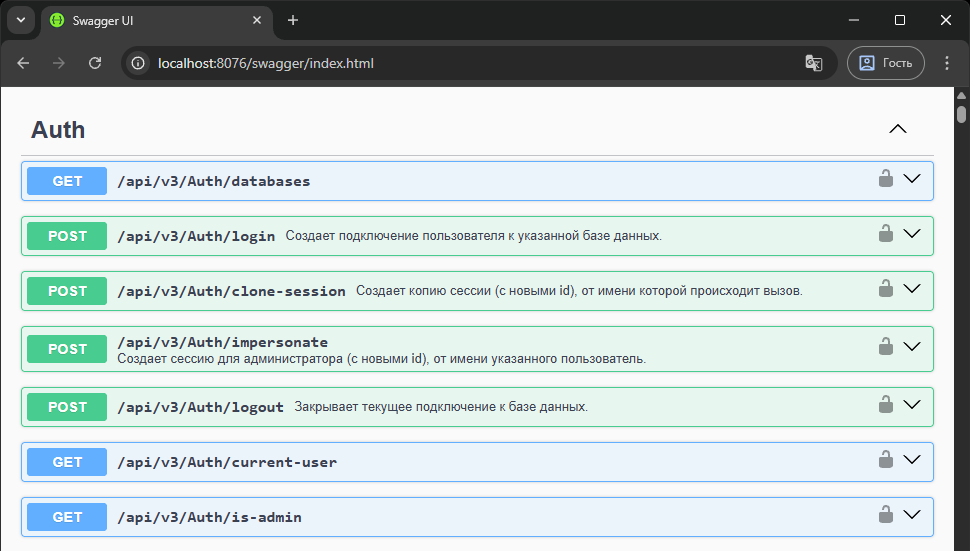
Для изучения документации авторизация не нужна, но мы выполним соединение с базой данных, чтобы "вживую" взаимодействовать с ним. Для соединения с базой данных используется конечная точка "/Auth/login":
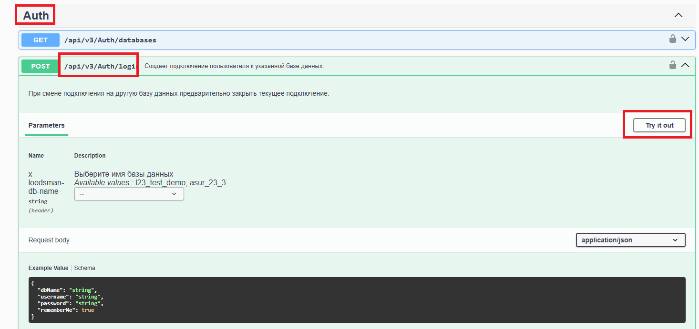
После нажатия кнопки Try it out появляется возможность редактирования данных для входа. Заполняем JSON своими данными:
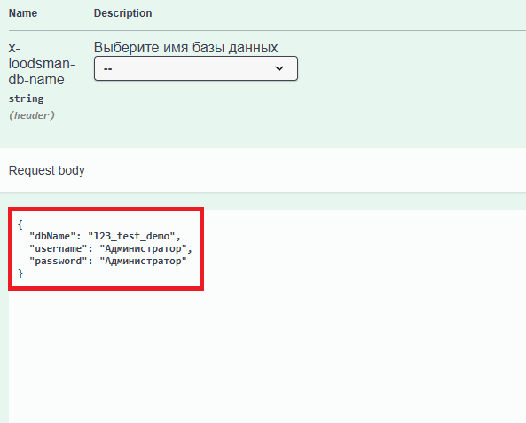
Нажимаем кнопку Execute и видим успешно выполненный запрос и ответ сервера приложений:
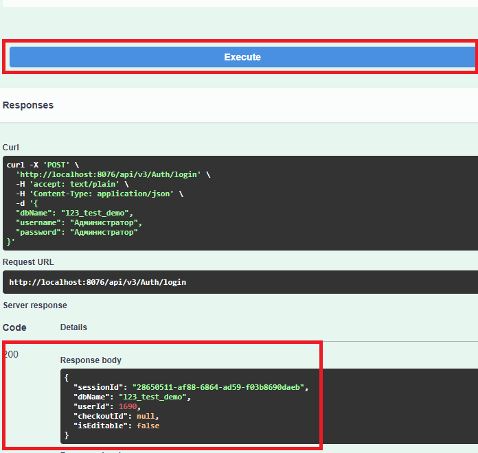
Значение поля sessionId можно сохранить, оно поможет нам в тестировании приложения.
После авторизации, у нас появляется возможность выполнять любые доступные запросы.
Определение моделей данных
В первую очередь нужно понять, какие данные ожидаются в отчете. Для отчета по точной структуре определим следующие данные:
| Тип | Обозначение | Наименование | Номер | Количество | Масса | Позиция |
|---|---|---|---|---|---|---|
Для получения данных будем использовать конечные точки раздела "ObjectInfo".
Первый метод, который нам потребуется – это "ObjectInfo/get-prop-objects"
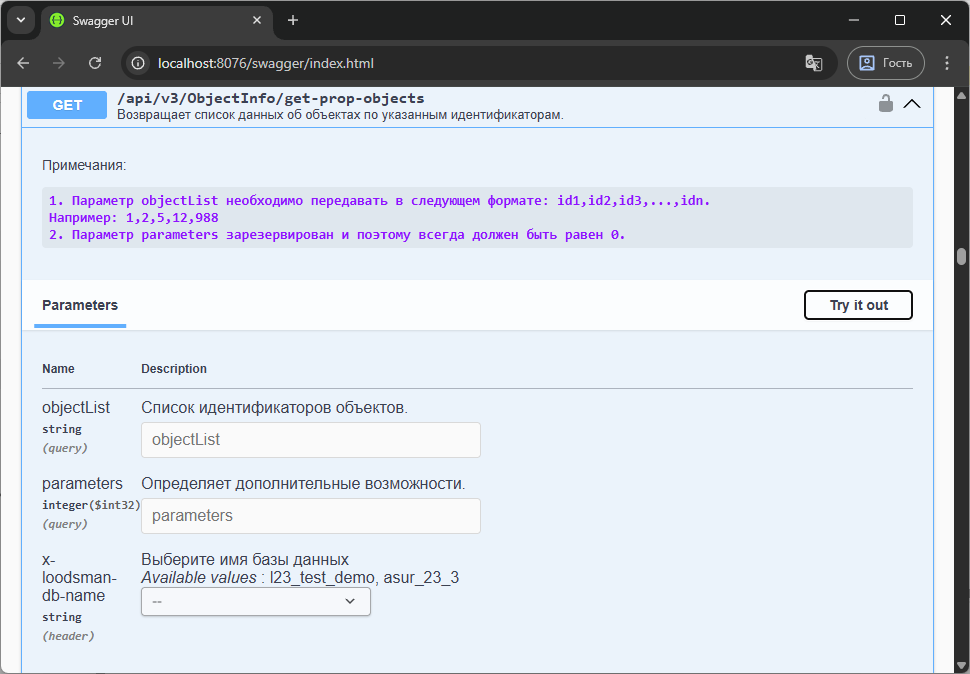
Он возвращает данные об объектах по указанным идентификаторам, и с его помощью мы получим информацию о корневом объекте.На выходе – массив из одного элемента, так как мы указали только один идентификатор.
Пример ответа сервера:
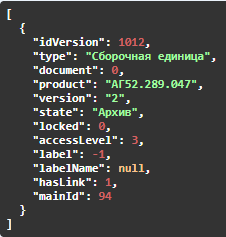
Второй метод, который мы будем использовать - ObjectInfo/get-linked-fast
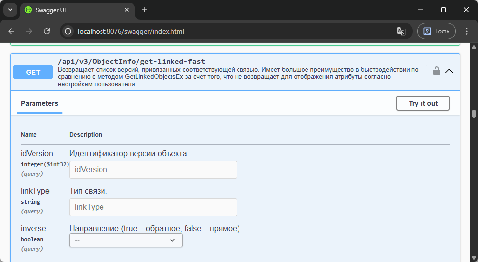
С его помощью мы будем искать дочерние объекты, начиная от корня и на заданную глубину.
Проверим первый уровень дочерних версий объекта с идентификатором 1012 и связью "Состоит из ...":
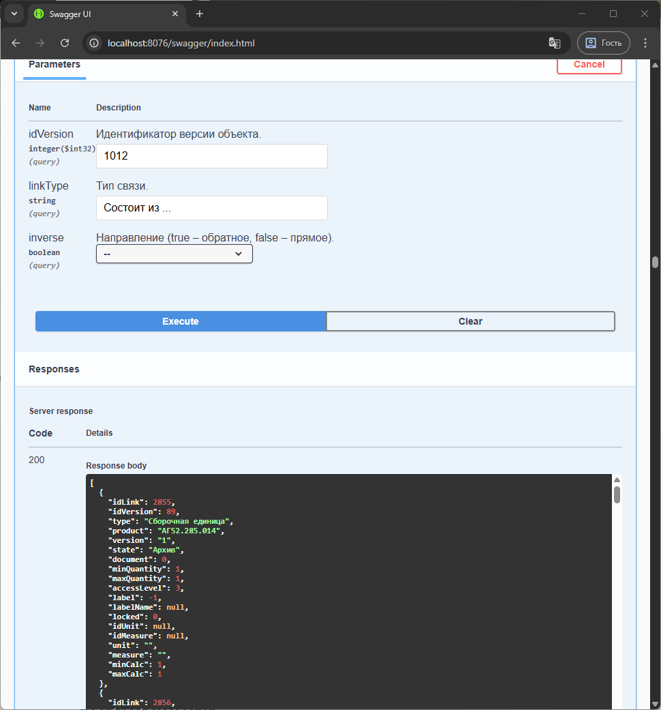
На выходе – массив дочерних элементов.
При этом названия полей выходных данных методов "ObjectInfo/get-prop-objects" и "ObjectInfo/get-linked-fast" полностью пересекаются в части интересующей нас информации:
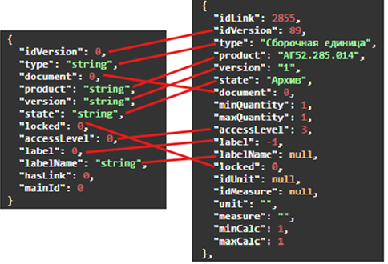
Это позволяет сделать единый программный объект для получения информации из двух методов. Нужный объект будем создавать путем генерации класса из JSON, таким же образом, как делали с классом конфигурации.
В первую очередь нужно создать отдельный файл класса для хранения объектных моделей:
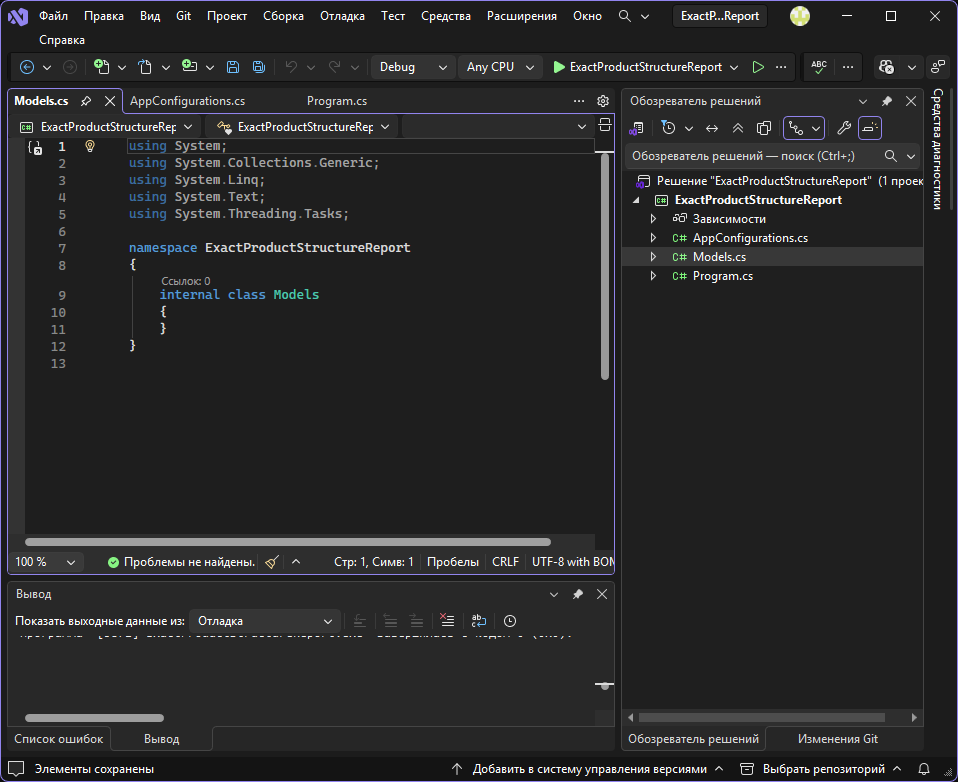
Теперь копируем JSON одного элемента из выдачи метода "ObjectInfo/get-prop-objects" (не весь массив):
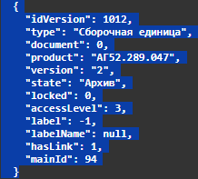
И через "специальную вставку" генерируем объект:
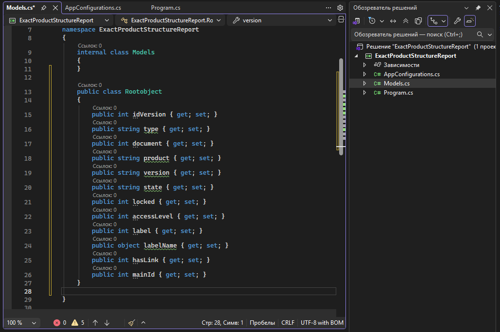
Отредактируем его под нашу задачу:
- переименуем из «Rootobject» в «ObjectInfo»
- удалим пустой класс «Models»
- удалим ненужные поля – document, state, locked, accessLevel, label, labelName, hasLink, mainId.
Если их оставить – поведение приложения не поменяется, просто в коде будут неиспользуемые поля. - добавим 3 поля из выдачи метода ObjectInfo/get-linked-fast – idLink, minCalc, maxCalc.
- поменяем первые строчные буквы на заглавные (необязательно)
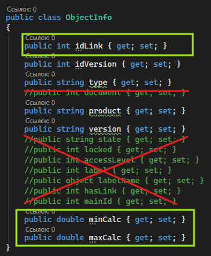
Код получившегося объекта:
public class ObjectInfo
{
public int idLink { get; set; }
public int idVersion { get; set; }
public string type { get; set; }
public string product { get; set; }
public string version { get; set; }
public double minCalc { get; set; }
public double maxCalc { get; set; }
}
Далее необходимо получить атрибуты всех дочерних объектов и связей. Конечная точка, через которую мы будем получать информацию об атрибутах версии - "ObjectInfo/get-info-about-version-mode-3"
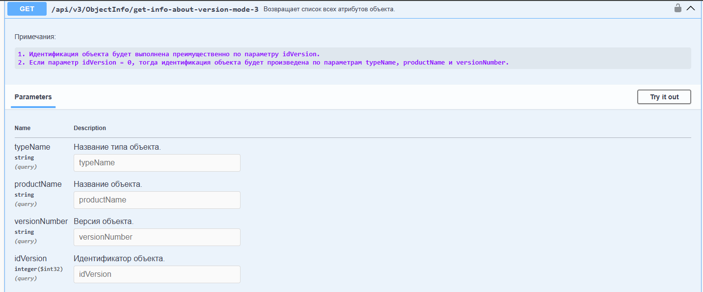
У него много входных параметров, но нам достаточно idVersion=89, полученной на предыдущем шаге.
Получаем ответ в виде списка объектов атрибутов: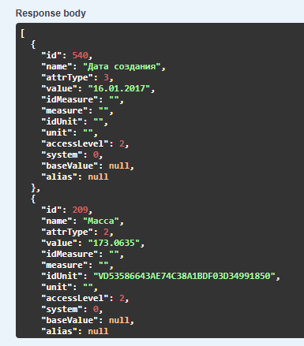
Сгенерируем класс для хранения результатов аналогично предыдущим методам, используя "специальную вставку", переименование класса и удаление "лишних" полей.
public class Attributes
{
public int id { get; set; }
public string name { get; set; }
public string value { get; set; }
}
Конечная точка, через которую мы будем получать информацию об атрибутах связи - ObjectInfo/get-link-attributes-2
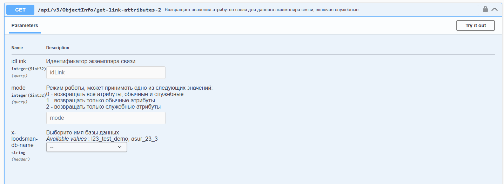
Для передачи доступно только два входных параметра, из запроса get-linked-fast возьмем idLink=2855 и выберем режим mode=0, чтобы вернулись и обычные и служебные атрибуты.
Получаем ответ в виде списка объектов атрибутов: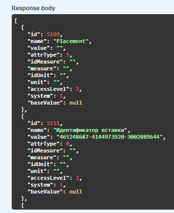
Названия полей выходных данных методов ObjectInfo/get-info-about-version-mode-3 и ObjectInfo/get-link-attributes-2 полностью пересекаются в части интересующей нас информации:
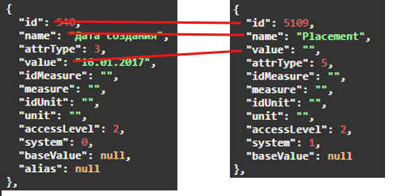
Это значит, что мы можем переиспользовать код объекта «Attributes», созданного для «get-info-about-version-mode-3» и не создавать новый класс:
public class Attributes
{
public int id { get; set; }
public string name { get; set; }
public string value { get; set; }
}
Теперь у нас есть все требуемые поля ожидаемой модели данных, но проблема в том, что они находятся в разных объектах - «ObjectInfo» и «Attributes».
Нужно сделать один общий объект, в котором будут аккумулироваться все нужные для таблицы данные. Для этого просто и придумаем название поля для каждого столбца ожидаемой таблицы:
| Тип | Обозначение | Наименование | Версия | Количество | Масса | Позиция |
|---|---|---|---|---|---|---|
| Type | Product | Name | VersionNumber | Quantity | Weight | Position |
Дополнительно нужно два служебных поля, которые не будут выводиться в отчет, но помогут явно идентифицировать версии – IdVersion и IdLink и будут необходимы для рекурсивных запросов в глубину дерева. Так как новый объект фактически будет заполнять строки таблицы, назовём его ReportRow:
public class ReportRow
{
public int IdVersion { get; set; }
public int IdLink { get; set; }
public string Type { get; set; }
public string Product { get; set; }
public string Name { get; set; }
public string VersionNumber { get; set; }
public double Quantity { get; set; }
public string Weight { get; set; }
public string Position { get; set; }
}
Финальный код класса с моделями данных Models.cs:
namespace ExactProductStructureReport
{
public class ObjectInfo
{
public int idLink { get; set; }
public int idVersion { get; set; }
public string type { get; set; }
public string product { get; set; }
public string version { get; set; }
public double minCalc { get; set; }
public double maxCalc { get; set; }
}
public class Attributes
{
public int id { get; set; }
public string name { get; set; }
public string value { get; set; }
}
public class ReportRow
{
public int IdVersion { get; set; }
public int IdLink { get; set; }
public string Type { get; set; }
public string Product { get; set; }
public string Name { get; set; }
public string VersionNumber { get; set; }
public double Quantity { get; set; }
public string Weight { get; set; }
public string Position { get; set; }
}
}